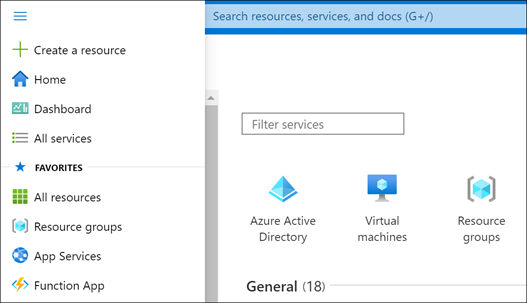
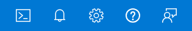
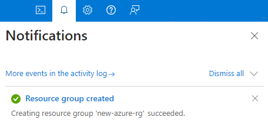

Let's look at some of the more common areas you'll typically use in the Azure portal.
All services
-
In the top left-hand corner of the Azure portal, select the Show portal menu icon.
Selecting this icon expands the portal menu.

-
Select All services . Take a minute to browse through the list to get an idea of how many services Azure offers. You can filter the services that appear by using the search box near the top of the pane.
-
Select Virtual machines . If you don't see it, use the search box.
-
The Virtual machines pane appears. You haven't created any virtual machines yet, so there are no results.
-
Select + Create > Azure virtual machine . The Create a virtual machine pane appears.
-
To create a virtual machine, you could enter information here. For now, select the X in the top right-hand corner to close the Create a virtual machine pane.
-
Select the X in the top right-hand corner to close the Virtual machines pane.
-
Select Microsoft Azure on the top left-hand side to return to the Home page.
Global controls
Find the global control menu at the top of the screen.

These options are always available in the portal, no matter what service you're using.
Hover over each icon until you see a tooltip pop up. These tooltips show the name of each menu item.
Next, we'll explore each of these items.
Azure Cloud Shell
The Azure Cloud Shell is available in the Sandbox environment that we're using for this exercise, but the Sandbox version of the shell has reduced functionality. To explore all of the Azure Cloud Shell features, use your own Azure subscription.
-
Select the Cloud Shell ( >_ ) icon in the toolbar. Azure Cloud Shell launches at the bottom of the screen.
-
Read the welcome menu that appears, then select either Bash or PowerShell .
-
Because we won't use the shell further in this exercise, select Close .
Notifications
-
On the icon bar menu bar, select the Notifications ( bell ) icon. This window shows any notifications related to your account, such as confirming whether resources were deployed correctly.

-
If any notifications appear, hover your mouse over one of them. Select the X that appears in that notification to dismiss it.
-
Select the X in the top right-hand corner to close the Notifications pane.
Settings
-
Select the Settings (gear) icon to open the Portal settings pane. The Directories + subscriptions section is shown by default. This is where you can apply subscription filters or change directories. We won't use this section for this exercise.
-
Select the Signing out + notifications tab at the left. In the Sign me out when inactive drop-down menu, select After one hour .
-
Select Show pop-up notifications . When this option is checked, notifications will appear as pop-up "toast"-style notifications. They'll still show up in the Notifications pane as well.
-
Select Apply to save your Signing out + notifications selections.
-
Select the Appearance + startup views tab at the left. Under Theme , select one of the different colored themes and select Apply . Observe the changes to the portal, and leave it set to the one you like the best.
-
Select the Language + region tab at the left. In the Language drop-down box, select Español . Select the Apply button, then select OK to confirm your changes. If a Translate this page dialog box appears, close the box. The whole Azure portal now appears in Spanish. You can select Microsoft Azure to view the Home page in Spanish, or navigate to other pages.
-
To revert back to English, select the Settings (gear) icon in the top menu bar, then select the Idioma y región tab at the left. In the Idioma drop-down box, select English . Select the Aplicar button, then select Aceptar to confirm. The portal will now appear in English again.
Support + troubleshooting pane
-
Select the Support + troubleshooting (
?) icon to show the Support + troubleshooting pane. -
In the dialog box, enter a few words to describe a potential problem. For example, you could type "Billing question" or "Unable to create storage account". Select Go .
-
Make additional selections when prompted, then review the information provided. This information can often help resolve common issues or questions.
-
Near the top of the pane, select Create a support request . Support requests can only be created using an active subscription. Creating support requests from a free Microsoft Learn sandbox is not supported, but you can click some of the steps on the New support request screen, such as Problem description and Recommended solution .
-
Because you aren't submitting a real support request, select Home in the top left corner. If you're prompted about unsaved edits, select OK .
-
Select the Support + troubleshooting (
?) icon to reopen the pane, then select Start again to clear your previous entry. -
Under Health Events , select View service health .
-
Review the information on the screen about any current service issues or planned maintenance.
-
In the Support + troubleshooting pane, explore the options in the Support resources section, such as Ask the Azure community , Explore Azure documentation , or Visit Quickstart Center .
-
When you're finished, select the X in the top right-hand corner to close the Help pane.
Feedback pane
-
Select the Feedback (person with dialog box) icon to open the Send feedback to Microsoft pane.
-
Select one of the icons to indicate whether you are satisfied with your experience.
-
Type your impressions of Azure in the Tell us about your experience box.
-
Optionally, select the box that says It's OK to contact me about my feedback . Then select Submit feedback .
-
A Feedback sent notification will appear. You can view this notification again by selecting the Notifications ( bell ) icon, as described earlier.
Profile settings
-
Select your name in the top right-hand corner of the portal.
-
Select More options ( ... ), then select My permissions .
-
Review the information that appears to see the role you've been assigned on the Concierge Subscription .
-
Select the X in the top right-hand corner to close the My permissions page.
Now that we've explored some of the key areas of the Azure portal, let's learn about one of the most useful features: Dashboards.